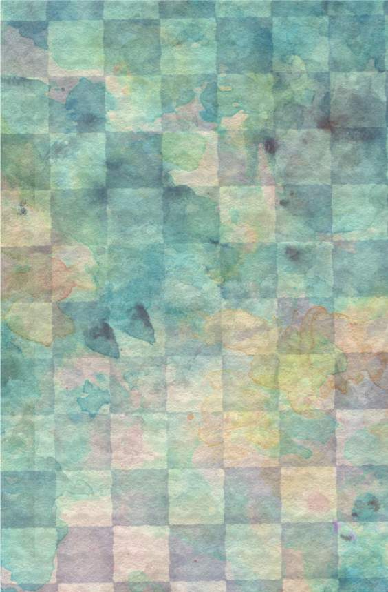

ワンオラクル
聞きたいことを具体的に思い浮かべて今日の過ごし方・恋愛・仕事・金運など…
今あなたが知りたいことは？
下に続く占い方のヒント・やり方も参考にしてね 
占うときのヒント
- 同じ質問は繰り返さないで
- 引く前に深呼吸してリラックスして
- 引いたカードの行動をしてみよう
カード一覧
カードをタップして詳細を見る
ワンオラクルのやり方
ワンオラクルとは？
ワンオラクルは、カードを1枚だけ引いて、そのカードから得られるメッセージやアドバイスを読み解く占術です。シンプルにテーマを絞ることで、的確な示唆を受け取ることができます。
ワンオラクルでは具体的に質問しよう
ワンオラクルは一問一答です。より具体的な質問を頭に浮かべましょう。
質問のポイント
- 「誰」を占いたいか—自分・相手
- 「いつのこと」を占いたいか—過去・現在・未来
- 「なに」を占いで得たいかーアドバイス・今の状況・相手や自分の心
オラクルカードでは結果の良し悪しではなく、結果からどんなアドバイスを得られるかのほうが重要です。
もし質問があいまいなままカードをひいてしまうと ・結果の良し悪しに執着してしまい、カードからのアドバイスを行動に移せない ・漠然とした答えしか返ってこず、満足できない ・勝手に都合のいい解釈をしてしまう
など、正しく結果と向き合うことができなくなってしまいます。
質問を用意するときは「自分はどうしたいのか」という意思を明確にし、さらに「それを叶えるのはどうすればいいのか」という具体案をセットにするといい質問に近づきます。
すぐに使える質問例
彼氏はできる？
半年以内に結婚を前提とした相手と付き合うにはどうすればいい？
「彼氏はできる？」だと漠然としすぎています。「彼氏が欲しい」という意思を前提に、「いつまでに」「どんな相手と」と「どうすれば」付き合えるのかまで具体化させましょう。
今回のプレゼンはうまくいく？
プレゼンを成功させるために必要な準備や心構えは？
うまくいくかどうかの結果をタロットに求めると、他力本願になってしまいます。プレゼンを前にできることや考え方について質問することで、イメージトレーニングもしやすくなるはず。｢成功させる｣という意志も自信も強くなるでしょう。
ケンカした友達はまだ怒っている？
友達と仲直りするにはどんな言葉で謝ればいい？
友達の様子も気になりますが、謝ることが先決。感情より行動について質問しましょう。｢仲直りのためにどうすればいい？｣という質問もOKですが、｢言葉｣や｢最初に出す話題｣など、できるだけ細部について質問してみると、カードを読みやすくなります。
今、 大きい買い物をしてもいい？
なぜ私は買うかどうかを迷っているの？
最終的に購入するかどうかを決めるのは自分しかいません。どうして迷いが生まれているのか、その原因を探る質問をしてみると、自分では意識していなかったことや見落としていたポイント、忘れていた事柄などに気付くきっかけになるでしょう。
ワンオラクルQ&A
Q1. 同じ質問を何度もしてもいいの？
A. 大丈夫です。しかし、時間をおきましょう。
一度結果やアドバイスを受けて、行動したり気持ちを入れ替えたりしたあとであればOKです。
しかし結果に納得いかないからといって何度も引き直すと自分に都合のいい結果しか受け入れることができなくなります。それでは意味がないので、まずは結果を受け入れて行動してみましょう。
Q2. ピンとこない結果がでたらどうすればいいの？
A. 行動のヒントにしましょう。占いをさらに掘り下げるのもオススメです。
｢なぜこのカードが出たんだろう？｣と考えれば、何か気付きを得ることができるでしょう。
また、なぜこの結果が出たのか、別の方法はないのかをカードに質問してみるのも1つの方法。カードの答えは｢保証付きの予告｣ではないことを忘れないで。現実を作るのはあくまでも自分自身の行動です。
About
カード制作背景
このオラクルカードは、現在の日常に根ざしたモチーフを下に制作しました。
カードには、日常的な行動を多く描き、わかりやすく日常に取り入れる事ができるようにしています。
制作の際にはデジタルを用い、「ポップでゆめかわいい」を心がけました。
カードに込めた思い
私がこのカードに込めたのは「小さな気づきが人生を豊かにする」というメッセージです。
日々の中で見過ごしがちなサインや直感を大切にしてほしいという願いを込め、
カード一つひとつに具体的なメッセージを添えています。
作者紹介
ネクタ リンです。
私もオラクルカードに救われた一人です。皆さんのセルフケアに役に立てば幸いです。